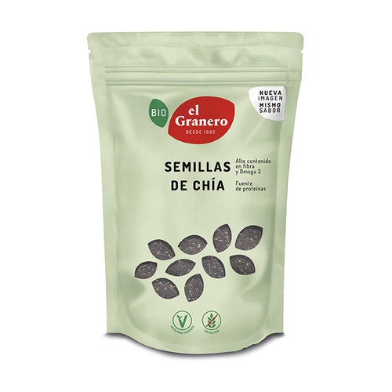
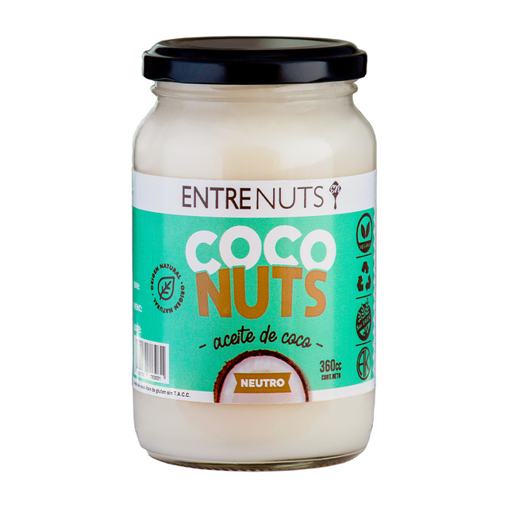
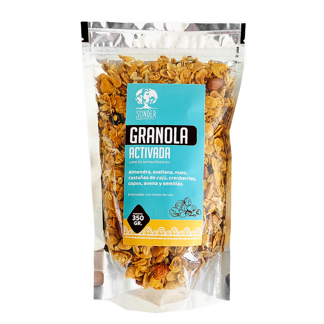
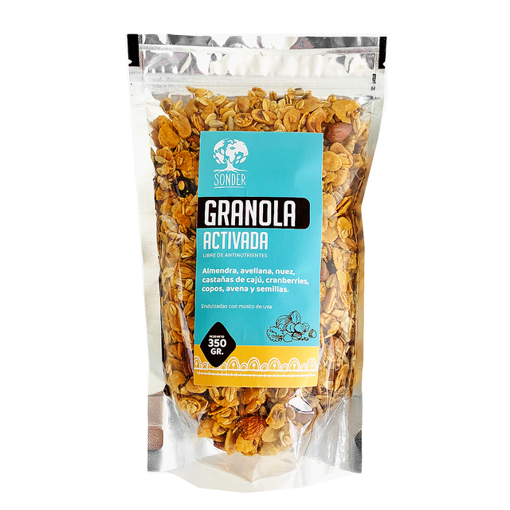
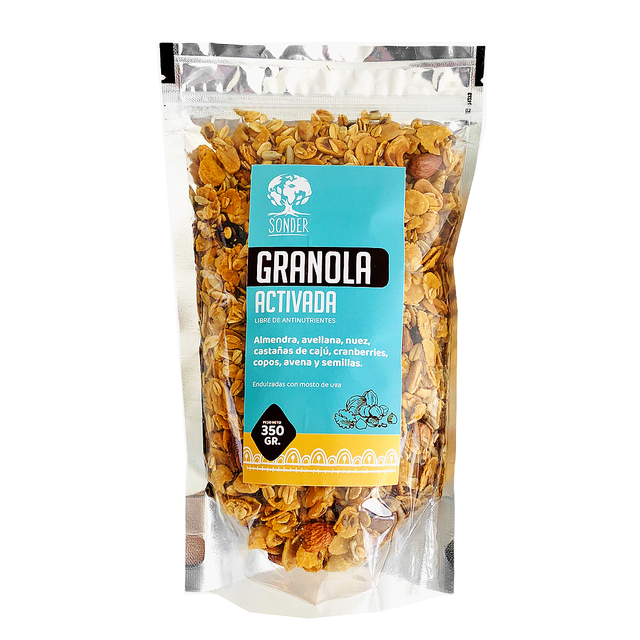

Bienvenidos a HealthFoody
En HealthFoody, nos dedicamos a ofrecer productos saludables, orgánicos y de alta calidad para mejorar tu bienestar. Descubre nuestra selección de alimentos frescos y naturales en el corazón de Buenos Aires.
Productos Destacados


 

